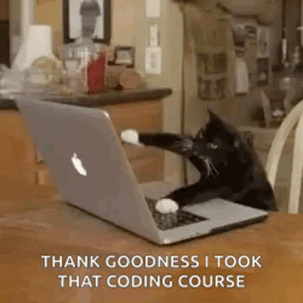

For 11th grade I plan to get high honor roll and maybe a scholorship. I want to go to college to become a coding teacher and maybe do projects.
A goal of mine is to start a small game this year and later publish it.
I use a game engine called GameMaker 2. It would a platforming game combining diffrent gameplay styles like from games like Mario, Hollow, Knight, Sonic, etc.
I halted progress on it as I was getting stressed and needed coding help.